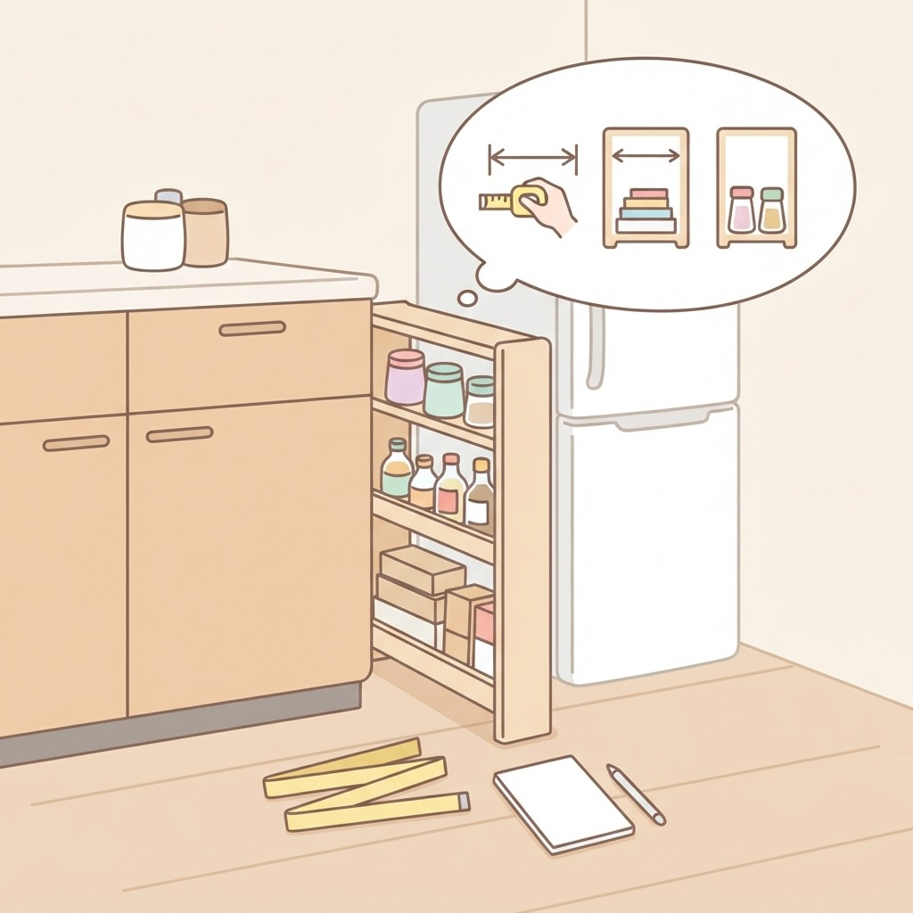
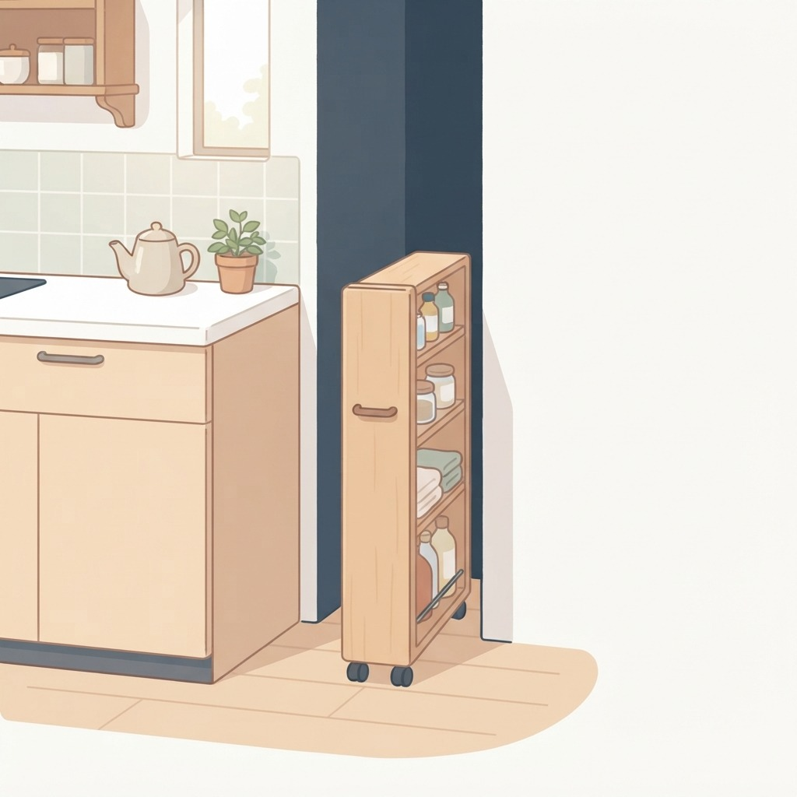
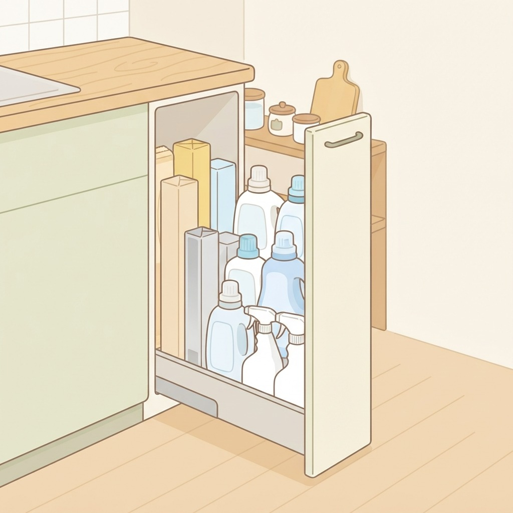
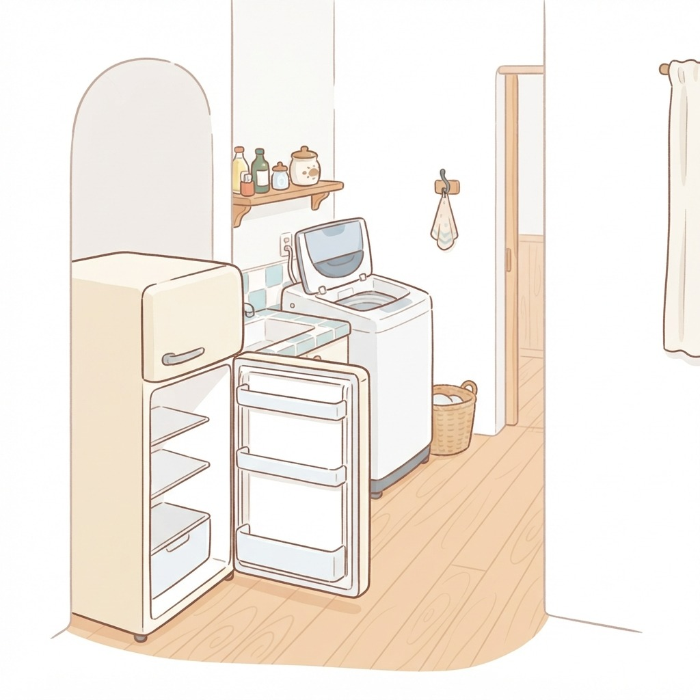
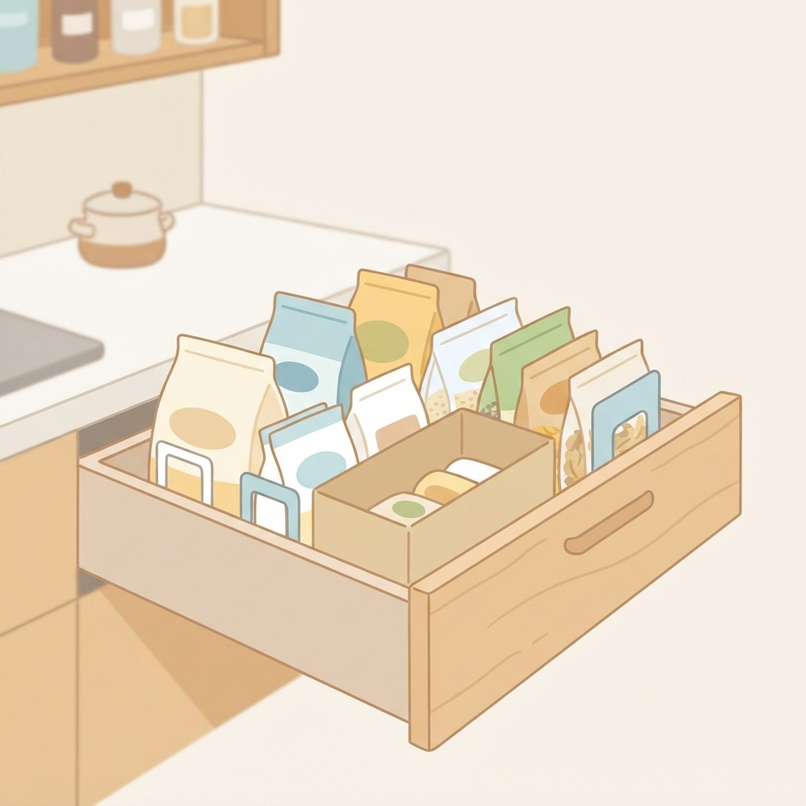

数センチのすき間、使えます
冷蔵庫横・洗面台脇の細い空間から
この記事のコツ
- まず幅を測る
- キャスターで引き出す
- 入れるのは軽い物
- 扉や通路を邪魔しない
- 袋物は立てて仕切る

1まず幅を測る
すき間は3cm違うと入る物が変わる。幅・奥行き・高さをメモしてから探すと失敗しにくい。

2キャスターで引き出す
奥まで手が届かない細い空間は、底にキャスターを付けたケースごと引き出せる形にする。

3入れるのは軽い物
細長い収納は倒れやすい。ラップ類や洗剤ストックなど、軽くて背の高い物を下から詰める。

4扉や通路を邪魔しない
冷蔵庫の扉、洗濯機のふた、人が通る幅。開け閉めを一度試してから置き場所を決める。

5袋物は立てて仕切る
詰め替えやストック袋はブックエンドや空き箱で仕切ると、倒れずに上から中身が見える。
収納用品を買う前に
棚やすき間に入るか不安なときは、寸法アシスタントで測った数字を入れると、入るサイズの候補が出ます。